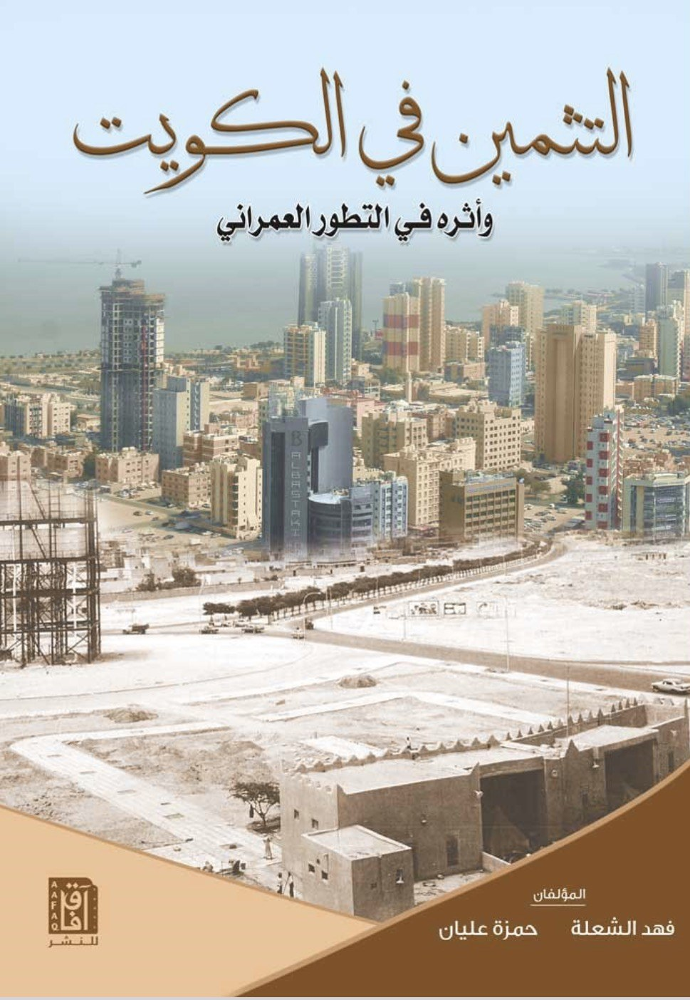
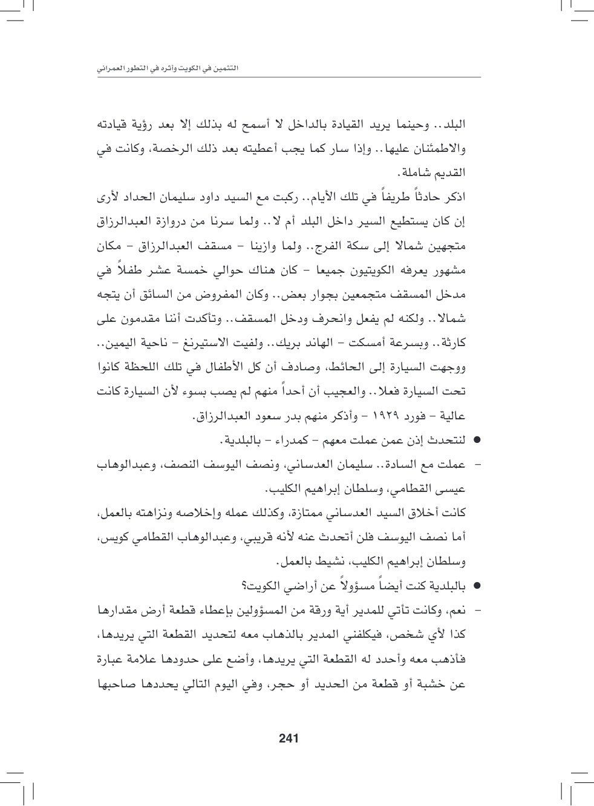

Recalled in a published interview · Book pages, Fahad Al-Sha'la and Hamza Alyan, Al-Tathmin fil-Kuwait wa Atharuhu fil-Tatawwur Al-Umrani, Aafaq, Kuwait
Al-Tathmin fil-Kuwait: Abdulwahab Eissa Al-Qatami among the directors of Kuwait Municipality
What it is
In an interview printed in the book, a former Kuwait Municipality official lists the directors he worked with: «Sulaiman Al-Adsani, Nisf Al-Yousef Al-Nisf, Abdulwahab Eissa Al-Qatami and Sultan Ibrahim Al-Kulaib». He adds: «Abdulwahab Al-Qatami was a good man».
Why it matters
It records Abdulwahab Eissa Al-Qatami as one of the directors at Kuwait Municipality, as remembered by someone who worked under him.
Page copies


Sources
Fahad Al-Sha'la and Hamza Alyan, Al-Tathmin fil-Kuwait wa Atharuhu fil-Tatawwur Al-Umrani, Aafaq, Kuwait, page 241
How this text was made: The year of publication and the name of the person interviewed are not on the pages sent.
Open in the interactive site